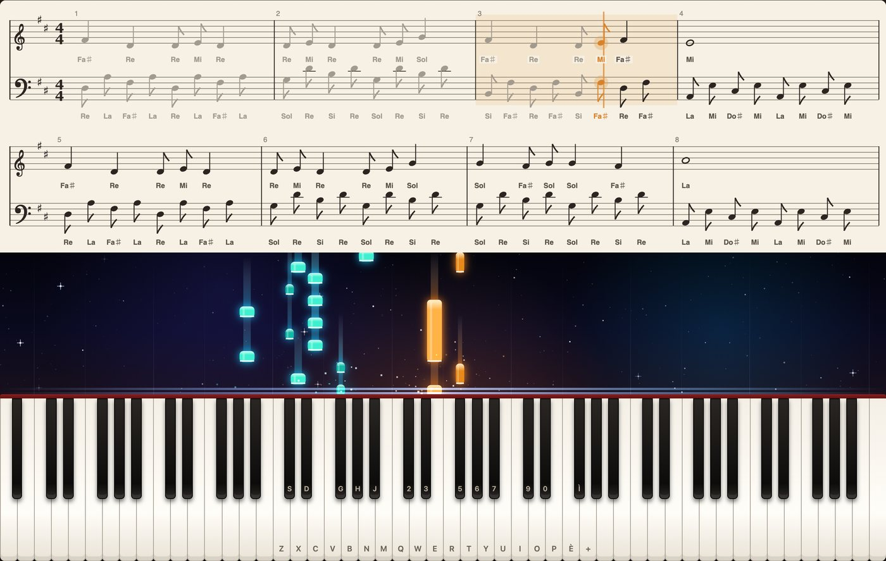
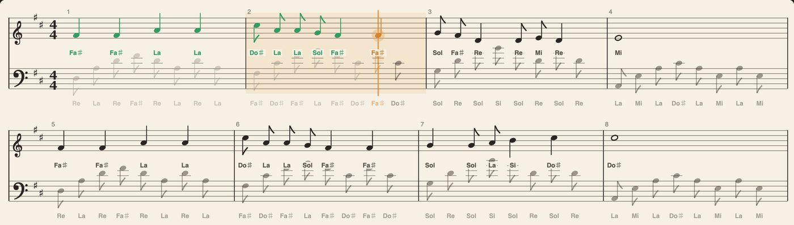
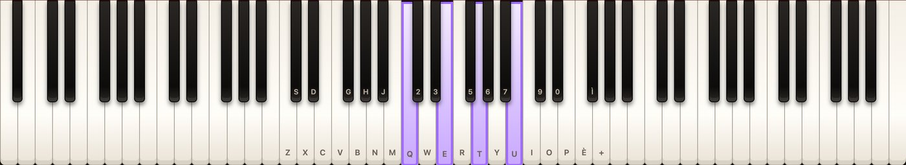

1Per iniziare
PlayPiano è un pianoforte a 88 tasti che funziona nel browser e come app per computer. Non richiede registrazione e non invia nulla in rete: tutto avviene sul tuo dispositivo.
- Apri l'app e premi un tasto qualsiasi del pianoforte. Al primo tocco si caricano i suoni del pianoforte a coda: in alto a destra compare Pianoforte a coda pronto.
- Premi ♪ Demo per vedere subito pentagramma, note che cadono e tasti che si illuminano.
- Quando vuoi studiare un brano, passa alla modalità Apprendimento.
2Suonare
Quattro modi di suonare
- Mouse: fai clic sui tasti. Trascinando il puntatore ottieni un glissando.
- Touch: puoi usare più dita insieme, per suonare accordi.
- Tastiera del computer: due file di tasti coprono due ottave e mezza. Le lettere sono scritte sui tasti del pianoforte.
- Tastiera MIDI: collegala prima di aprire l'app. Viene riconosciuta da sola, compreso il pedale. Serve Chrome, Edge o l'app desktop.
Dinamica
Con mouse e touch, più in basso premi sul tasto e più forte suona la nota. Con la tastiera del computer, tieni premuto Maiusc per suonare forte. Suonando piano il timbro diventa anche più scuro, come su uno strumento vero.
I comandi dello strumento
| Comando | A cosa serve |
|---|---|
| Strumento | Pianoforte a coda, piano sintetico, piano elettrico, organo, synth, archi. |
| Ottava | Sposta le note assegnate alla tastiera del computer. Vale anche con ← e →. Così raggiungi tutti gli 88 tasti. |
| Volume e Riverbero | Livello generale e ambiente della sala. |
| Etichette | Cosa scrivere sui tasti: lettere del computer, Do Re Mi, C D E oppure niente. La scelta vale anche per i nomi sul pentagramma. |
| Sustain | Il pedale di risonanza. Si tiene anche con la Barra spaziatrice. |
3Caricare uno spartito
Premi 📂 Carica MIDI / MusicXML oppure trascina il file sulla pagina. La tastiera si posiziona sul brano e compaiono pentagramma e cascata.
| Formato | Estensioni | Note |
|---|---|---|
| MusicXML | .musicxml .xml .mxl | Il più fedele: conserva durate, alterazioni e mani. Si esporta da MuseScore, Sibelius, Finale, Dorico. |
| MIDI | .mid .midi | Molto diffuso. Le durate scritte vengono dedotte dall'esecuzione, quindi il pentagramma può essere approssimato. |

Leggere lo schermo
- Arancione è la mano destra, verde acqua la sinistra. Vale per le note che cadono e per i tasti.
- Il pentagramma mostra sempre due righe: quella che stai suonando e la successiva. Sotto ogni rigo ci sono i nomi delle note.
- Fai clic su una battuta del pentagramma per ripartire da lì.
La barra dello spartito
| Comando | A cosa serve |
|---|---|
| ⏮ e ▶ Avvia | Torna all'inizio, avvia o mette in pausa. Anche con Invio o con un clic sulla cascata. |
| Modalità | Ascolta suona il brano da solo. Apprendimento aspetta te. |
| Mani da suonare | Entrambe, solo destra o solo sinistra. Conta in Apprendimento. |
| Velocità | Dal 25% al 150%, senza cambiare l'intonazione. |
| Vista | Pentagramma e cascata, solo pentagramma o solo cascata. Su schermi bassi conviene una sola delle due. |
| Do Re Mi | Mostra o nasconde i nomi delle note sul pentagramma. |
| ✦ Spazio | Accende o spegne stelle, scie e scintille della cascata. |
| Posizione | Trascina per spostarti nel brano. |
Nella cartella esempi del progetto trovi alcuni brani di prova.
4Modalità Apprendimento
È il cuore dell'app: il brano avanza solo quando suoni la nota giusta. Puoi prenderti tutto il tempo che serve.
- Carica un brano, genera un'idea oppure premi Demo.
- In Modalità scegli Apprendimento (avanza solo se suoni).
- In Mani da suonare scegli una mano sola: l'app suona l'altra per te.
- Abbassa la Velocità al 50% e premi ▶ Avvia.
- Quando una nota arriva sulla linea luminosa, la cascata si ferma e il tasto da premere si illumina. Suonalo e il brano riparte.

Cosa succede mentre suoni
- Un tasto sbagliato lampeggia in rosso e conta come errore. Il brano resta fermo.
- Negli accordi devi premere tutte le note, anche una dopo l'altra.
- Le note dell'altra mano appaiono attenuate e non contano come errori.
- C'è una piccola tolleranza: una nota suonata con un attimo di anticipo viene accettata.
- Il punteggio mostra note giuste, errori, precisione e avanzamento. Si azzera quando ricominci o ti sposti nel brano.
5Compositore di idee
Genera brani originali completi, senza bisogno di internet. Ogni idea ha melodia per la mano destra, accompagnamento per la sinistra e una scheda che ne descrive la struttura.
| Scelta | Opzioni |
|---|---|
| Stile | Serena, Malinconica, Epica, Allegra, Valzer, Ninna nanna oppure Casuale. Ogni stile ha il suo tempo, la sua metrica e il suo accompagnamento. |
| Tonalità | Sette maggiori e sette minori, oppure casuale. |
| Lunghezza | 8, 16, 32, 64 o 128 battute. I brani lunghi hanno una forma a sezioni in cui il tema ritorna, per esempio A – B – A – C. |
| Difficoltà | Facile usa ritmi semplici, Media aggiunge crome e figure più mosse. |
- 🎲 Genera idea crea un brano nuovo e lo suona subito.
- ↻ Variazione mantiene accordi, tonalità e tempo, ma riscrive la melodia.
- La scheda dell'idea mostra titolo, tonalità, tempo, gli accordi di ogni sezione con nome e grado, la forma e uno spunto per sviluppare il brano.
Ogni idea si studia in modalità Apprendimento e si esporta in MIDI come qualsiasi altro brano.
6Generatore di accordi
Un accordo alla volta
Scegli Tonica, Tipo di accordo e Rivolto. I tasti si illuminano in viola e accanto compaiono la sigla e i nomi delle note. ▶ Ascolta lo suona, 🎲 ne propone uno a caso, ✕ spegne i tasti.

I diciotto tipi disponibili: maggiore, minore, diminuito, aumentato, sospeso di seconda e di quarta, sesta e minore sesta, settima di dominante, settima maggiore, minore settima, minore con settima maggiore, semidiminuito, settima diminuita, nona aggiunta, nona di dominante, nona maggiore, minore nona.
Giri di accordi
Un giro è una successione di accordi che si ripete. Scegli la tonica in alto, poi:
| Scelta | Opzioni |
|---|---|
| Giro di accordi | Tredici giri: pop, anni '50, classico, emotivo, canone di Pachelbel, jazz ii–V–I, turnaround, blues in dodici battute e cinque giri in minore, tra cui l'andalusa. |
| Accordi | Triadi, con la settima, oppure come previsto dal giro. |
| Accompagnamento | Accordi pieni, basso più accordo, ballata, arpeggio. |
| Ripetizioni | Una, due o quattro volte, con chiusura finale sulla tonica. |
🎼 Carica giro porta il giro su pentagramma e cascata. 🎲 Casuale sceglie tonalità, giro e accompagnamento per te. Gli accordi si collegano con il rivolto più vicino, come farebbe un pianista.
7Idee con IA locale
Puoi descrivere a parole il brano che vorresti, per esempio «un valzer allegro da festa di paese». Un modello di intelligenza artificiale sul tuo computer ne progetta titolo, stile, tonalità, tempo, accordi e motivo melodico. Il compositore dell'app completa il resto. Nessun dato lascia il tuo computer.
Preparazione, una volta sola
- Installa Ollama e avvialo.
- Scarica un modello. Un buon punto di partenza:
ollama pull gemma3:12b - Apri PlayPiano dall'app desktop oppure da
localhostcon il fileAvvia PlayPiano.command.
Uso
- Scrivi la descrizione nel campo Idee con IA locale.
- Scegli il Modello. Lunghezza e difficoltà si prendono dai menu del compositore.
- Premi ✨ Genera con IA o Invio. La prima risposta può richiedere fino a un minuto, perché il modello deve caricarsi.
Dopo la generazione, in alto a destra l'app indica quanti motivi del modello ha potuto usare. Se il numero è spesso basso, prova un modello più grande.
Quale modello scegliere
- Vanno bene i modelli di tipo «instruct» da circa 8 miliardi di parametri in su. Provati con buoni risultati:
gemma3:12begemma4:26b. - I modelli molto piccoli sbagliano spesso le durate. I modelli per codice, immagini o embedding non sono adatti.
localhost. Per usare l'IA dal sito, avvialo consentendo l'indirizzo del sito:
OLLAMA_ORIGINS=https://melody.djluza.com ollama serve8Registrare ed esportare
- ● Rec registra quello che suoni, pedale compreso. Premi di nuovo per fermare, poi ▶ Play per riascoltare. La registrazione resta in memoria finché non ne fai un'altra o chiudi l'app.
- ⬇ MIDI salva come file MIDI il brano caricato o generato, con mano destra e sinistra su tracce separate. Puoi riaprirlo qui o in qualsiasi programma musicale.
9App desktop
I pacchetti si scaricano dalla pagina delle Release su GitHub.
| Sistema | File | Al primo avvio |
|---|---|---|
| macOS con chip Apple | …-arm64.dmg | Clic destro sull'app, poi «Apri». |
| macOS Intel | ….dmg | |
| Windows | Setup oppure Portable .exe | «Ulteriori informazioni», poi «Esegui comunque». |
| Linux | .AppImage | Rendi il file eseguibile con chmod +x. |
Gli avvisi compaiono perché i pacchetti non hanno un certificato a pagamento. Rispetto al browser, l'app desktop si collega a Ollama senza configurazioni, legge i suoni in locale anche senza internet e accetta le tastiere MIDI senza chiedere permessi.
10Scorciatoie da tastiera
| Tasti | Funzione |
|---|---|
| Z X C V B N M | Tasti bianchi dell'ottava bassa, dal Do al Si. |
| S D G H J | Tasti neri dell'ottava bassa. |
| Q W E R T Y U I O P | Tasti bianchi dall'ottava alta in su. |
| 2 3 5 6 7 9 0 | Tasti neri dell'ottava alta. |
| ← → | Ottava giù e su. |
| Barra spaziatrice | Pedale sustain, finché la tieni premuta. |
| Maiusc + nota | Nota suonata forte. |
| Invio | Avvia o mette in pausa il brano. |
Le lettere seguono la posizione fisica dei tasti, quindi funzionano con qualsiasi layout. In Chrome ed Edge le etichette sul pianoforte si adattano alla tastiera italiana. Mentre scrivi nel campo dell'IA, la tastiera del computer non suona.
11Se qualcosa non va
| Problema | Cosa fare |
|---|---|
| Non sento nulla | I browser attivano l'audio solo dopo un clic o un tasto: premi una nota. Controlla il cursore Volume e il volume del computer. |
| Il pianoforte suona «finto» | I suoni reali si caricano al primo tasto e richiedono qualche secondo. Aspetta la scritta Pianoforte a coda pronto e verifica che lo strumento sia Pianoforte a coda. |
| Il menu dei modelli è vuoto | Ollama non è avviato, oppure hai aperto index.html con un doppio clic. Usa l'app desktop o Avvia PlayPiano.command, poi premi ⚙ per aggiornare l'elenco. |
| Ollama non parte | Se i modelli sono su un disco esterno, controlla che sia collegato. |
| L'animazione va a scatti | Spegni gli effetti con ✦ Spazio, oppure scegli una sola Vista. |
| La tastiera MIDI non viene vista | Collegala prima di aprire l'app e usa Chrome, Edge o l'app desktop. Safari e Firefox hanno un supporto limitato. |
| Il brano si ferma e non vedo il tasto da premere | La nota è fuori dalla parte di tastiera visibile: succede su schermi stretti. Sposta l'ottava con ← →. |
| Il pentagramma di un MIDI è strano | I MIDI suonati a mano libera hanno durate irregolari. Se esiste, usa la versione MusicXML dello stesso brano. |
| Un ritornello non viene ripetuto | I segni di ritornello dei file MusicXML non sono ancora interpretati: il brano viene letto in ordine. |
Per segnalare un problema o proporre un'idea, apri una segnalazione su GitHub.